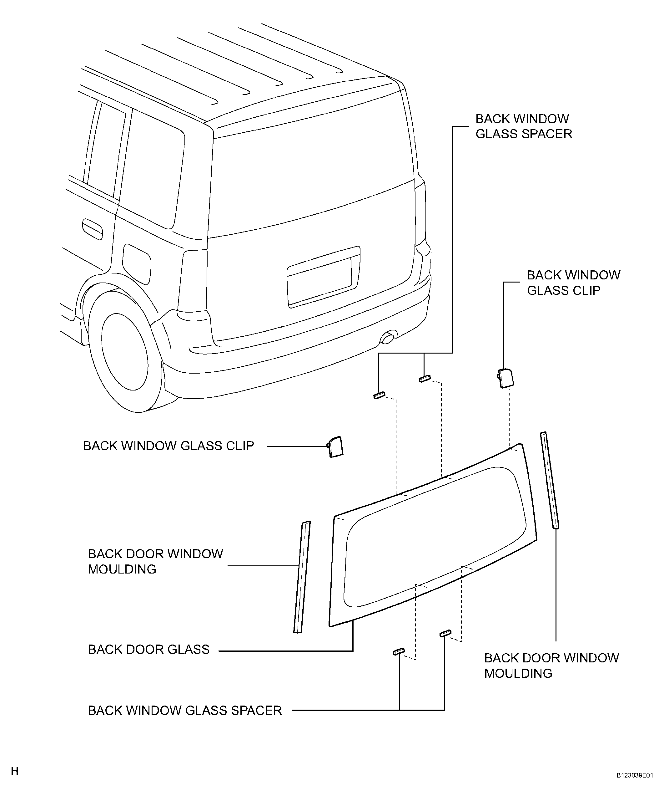

Home
>>
Scion
>>
2006
>>
xB Standard
>>
Repair and Diagnosis
>>
Accessories & Equipment
>>
Window Motors & Regulators
>>
Windshield/Window Glass
>>
Back Door Glass
>>
Components
Back Door Glass: Components
Fig 1: Identifying Back Door Glass Components

Courtesy of © TOYOTA, LICENSE AGREEMENT TMS1002